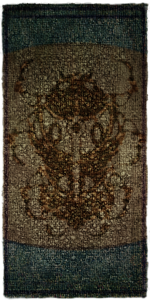

Morrowind:Redoran Canton
Morrowind:Places:Vivec
|  |
|
Entrance to the Redoran Canton |
|
The Plaza in the House Redoran Canton |
|
Map of Vivec's Redoran canton |
The Redoran Canton is one of the nine cantons in Vivec, located south of the Foreign Quarter, between the Hlaalu and Arena Cantons. It is controlled by House Redoran and hosts many services for its retainers and visitors alike.
The canton is also the site of two Morag Tong writs and several quests from Faral Retheran in the Redoran Treasury. It houses considerable Redoran treasures in its vaults. The Sixth House continues its assault on House Redoran in the sewers.
The Plaza
Saren Manor has a trap door leading to Toris Saren, who is hiding from a Writ. In the Dralor Manor is a key to the Vaults in an unlocked cupboard upstairs.
The Waistworks
The Waistworks contains Redoran Prison cells, which leads to the Treasury, which in turn connects to the Plaza and the Vault. In the Treasury is Faral Retheran, a House Cousin and quest giver for House Redoran . A Scout and Drillmaster Quarters offers training. An Indoril helmet and shield are lying on a chest, another on a table. There are bunk beds for Redoran Retainers.
The Canalworks
The Redoran Ancestral Vaults is guarded by three leveled Undead and an Ash Creature. It contains a crate with silver and magical weapons and three locked chests with gold.
The Underworks
In the northwest corner is a small Sixth House altar guarded by an Ancestral Ghost, complete with an Ash Statue, Corprusmeat along with a corpse holding a Rusty Key and a Daedric Dagger.
Robbing the Redoran Treasury
This is easily the best free loot haul in the entire game.
It will have no effect on Redoran players' faction reputation (unless caught).
Ahnassi might have told you that Dralor Manor in Redoran Plaza contains a key
(in Favela Dralor's bedroom drawers) which opens two locked (60)
chests with gold and jewels. Or you may have just incidentally found
it while poking around in Vivec homes. Ahnassi's details aren't quite right.
The key legally disarms and opens the trapped and locked (90) Lower Vault door
in the treasury, as well as some chests inside. The other contents of that
room are worth far more, both in sale and gameplay value,
than some gold and jewels, though you get those as well.
Enter the Redoran Treasury, also in Redoran Plaza.
You'll find the Upper and Lower Vaults (both downstairs from the entrance)
heavily guarded by retainers and Ordinators.
The Lower Vaultis on the bottom floor. Simply use the key to enter this vault,
which triggers no reaction from anyone. Go inside and wait for any guards in the vault
to go out where Drelse is, then close the door (actually, you can even simply wait,
using the "wait" button, for a few hours and the guards will leave, even if you have
the cell door closed!). Since the cell door is coded as solid instead of see-through,
you can pick up and unlock anything when alone in here, even when you can see guards
through the door's bars.
The key also opens the two small chests of gold (comparatively high amounts), while the chest of jewels (random) actually has no lock. Other loot laying around in this room:
- Several pieces of Ebony Armor – the second-best Heavy class in the game – including cuirass, greaves, closed helm, and tower shield
- Several pieces (random) of Glass Armor (excluding bracers) – the best Light Armor in the game – found in a crate
- Enchanted Bonemold Armor pieces (mid-range Medium Armor
- High-end weapons, a Glass War Axe and Dagger, and an Ebony Mace and Shortsword
- Random jewels, mid-range weapons, and/or armor pieces (e.g. Dwarven/Dwemer) in another crate
-
Random gold, jewels and/or low to high-end weapons and armor in three larger locked chests (the key does not work on them); this loot may be leveled.
- The chest on the table with the ebony weapons and armor contains two random ebony weapons
- There are two chests that contain a random excellent melee weapon. One is on the floor below the table covered in ebony armor and weapons; the other is on the back wall immediately to the right of the baskets.
- Random alchemy ingredients and clutter, in baskets and a bag, which seem rather out of place here
- A Gold Armor Cuirass, Helm, and Pauldrons.
This room contains three locked (50) chests and two locked (25) chests, plus other containers and loose loot, adding up to:
- Substantial amounts of gold and jewels
- Random, generic enchanted jewelry/clothing
- Random Exquisite-level clothing, unenchanted
- Ebony Longsword and Shortsword
- A Glass Longsword
- An Orc Warhammer
- A crate of one each of the regular Silver weapons
Various items from these rooms are badly damaged and must be repaired to sell for a good price. This should be done yourself, even with a terrible Armorer skill rating. Sell an undamaged bit of loot, and use some of the proceeds to buy a bunch of Repair Tongs or Apprentice or Journeyman Armorers Hammers from a Blacksmith who restocks them, and burn through them until the job is done. (High-end, light-weight hammers are expensive and have far fewer uses; they are for carrying while adventuring, for doing emergency repairs. Routine repair work should be done with the cheap stuff. Tip: Keep a pile of cheap tools on the floor at merchants to whom you regularly sell arms and armor, so you can repair them on-site to maximize sale value.)
The main game-design purpose of this dual hoard of magnificent booty (among other ones, like Ghorak Manor with its scary-looking Orcs who docilely let you empty their armor crates) appears to be to give repeat players a way to gear up quickly and get on with it, having already been through the "explore in confusion and wonder, and fight innumerable rats and crabs" phase on their first play-through. New players focused on the Main Quest and faction quests are unlikely to find this Lower Vault key by accident or by Ahnassi quest (only available to males anyway) until perhaps fairly late in the game. Another purpose this "Rob-me Vault" may serve is helping out exploratory open-world players with little interest in quests, who have been leveling without receiving many or any quest rewards, but looking everywhere at everything.
Getting Around
Vivec, Redoran connects to the Arena, the Foreign Quarter, St. Delyn and Hlaalu Canton. There are no Gondola services here.
Maps
Plaza
 Services in the Plaza |
Waistworks
Services in the Waistworks |